The lectures were given by Professor Jerry Hedrick. The dates of the lecture are noted.
24 Sept 1981
Course is graded on a combination of homework problems and take-home examinations. Exams do not emphasize memorization but rather setting up or predicting experimental results.
Synthesis gives rise to structure and structure gives rise to function. A similar example of how scientists might look at proteins is that they might see a moving object they call a car, then they would pulverize it to its atomic form, then leave intact the functional parts, and this sets the stage to examine the whole.
History
Begins in the 1930s with advent of molecular biology, the interaction of cellular, organic molecules which function to create a perpetuating system. Molecular biology could be divided into two ways:
- 1 dimensional: studying transcription, translations
- 3 dimensional: the study of protein structure and function (American school)
Delbrooke led the American school as a physicist, whereas Watson and Crick were the 1-D scientists. Perutz and Kendrew (both physicists) led a predominantly English school who said biology was explained by laws of chemistry and physics. Delbrück did not agree, but current research has shown that chemistry and physical laws do apply to biology.
Review and History of Protein Chemistry.
Axioms of Protein Chemistry—
- composed of α-amino acids joined by peptide bonds
- polyions
- active site is a protein
- macromolecules (amino acids→peptides→polypeptides→proteins) The colligative properties and MW were measured by osmotic pressure, sedimentation, and ultracentrifugation. Electron microscopes allow for visualization.
- structural level of organization: suggested by Linderstrom-Lang is 1°, 2°, 3°, 4° and domain
- proteins are linear and never branched
29 Sept 1981
History of Proteins — The discovery of the six axioms mentioned in the previous lecture were the result of research. Amino acids were discovered about 100 years earlier. In 1820, while having an interest in the acid hydrolysis of sugar polymers, Brasconnot isolated a crystal from sugar that was glycine. He called the sweet-tasting substance sucre de gelátin Brasconnot's reason for obtaining Gly was because he chose to boil collagen, which is 25 mol percent glycine. Its structure was not elucidated until 1857, 37 years later.
Protein chemistry got its start by the first attempts to label substances that might have protein. The first approach was rather drastic: hydrolysis by acid. The first separation of products involved crystallization of the several, if any, components and then characterize them (MW, density, pH). After all characterization, then efforts at synthesis are begun to reconstruct the initial substance.
By the start of the 20th century, 12 of the 20 amino acids were known. Emil Fischer shortly discovered three more: proline, hydroxyproline, and valine. Curtis had found that esterification of amino acids made them volatile so that separation by fractional distillation could be achieved, and Fischer used this technique to make his own discoveries.
Fischer's numerous contributions. Fischer proposed a lock-and-key
theory of enzymatic action at this time. He also knew that amino acids were
linked in a polymer, and called the linking bond the peptide bond. The
terms peptide,
polypeptide,
and the naming of
peptides as glycinylalanyl...
are nomenclature that was used by
Fischer. Fischer also developed the biuret assay for proteins, an assay
still used today.
By 1935, 17 amino acids had been discovered. Certain scientists investigating essential vitamins and substances in the animal and one of them, Rose, found that the amino acid threonine helped against nutritional deficiency. The last two, glutamine and asparagine, were not discovered until proteases were used to study amino acids; the harsh methods used to tear proteins and peptides apart, especially even mild acid hydrolysis, destroy the side chain amide of these amino acids such that they are indistinguishable from two other amino acids, glutamic acid and aspartic acid.
Svedberg's studies revealed that proteins are discrete macromolecular entities and not colloids, which was hypothesized. Enzymes are proteins with a catalytic function, and this was found by the first purification of these class of proteins by the crystallization of urease and of pepsin.
In the last 20 years some conventions regarding proteins have been retained. For example the classification of proteins by the British Physiological Society is based on the solubility of proteins:
| Category | Solubility |
|---|---|
| albumins | very water soluble: water itself is sufficient |
| globulin | salted water is required to solubilize |
| protamines | insoluble in water, but soluble in 50-90% ethanol |
| glutelins | acid or base soluble |
| scleroproteins | insoluble in any case |
Further classes include acidic or basic, fibrous or globular, structural or active (enzymatic). Within the so-called active proteins, a numerical classification was developed:
- Catalytic: having a binding function that causes a chemical action on the ligands
- Immune (defense): having a binding action that immobilizes
- Carrier (transport): binding occurs followed by transport or transfer
- Regulatory: binding of the ligand causes a change in the activity of the ligand
- Contractile: binding causes or affects movement with the use of energy
Structural Features of Amino Acids and Peptide Bond
The peptide bond is planar and its stability, i.e. strong resistance to breaking, is because of the resonance of electrons in the bond. In describing the successive of peptide bonds in peptides/proteins the planes they form show a relationship through various angles, which are called φi and ψi. Using this information, Pauling hypothesized that proteins could form what he called an α-helix, largely because the angular planes of peptide bonds rotated on the pivot α-carbon, already so named.
Alpha helix. The α-helix is a 3.613 helix, a nomenclature that means there are 3.6 residues per turn of the helix, and 13 atoms in the hydrogen-bonding scheme. A 310 and 4.316 (also called π-helix) are also theoretically possible, although the pi-helix has never been found to exist.
1 Oct 1981
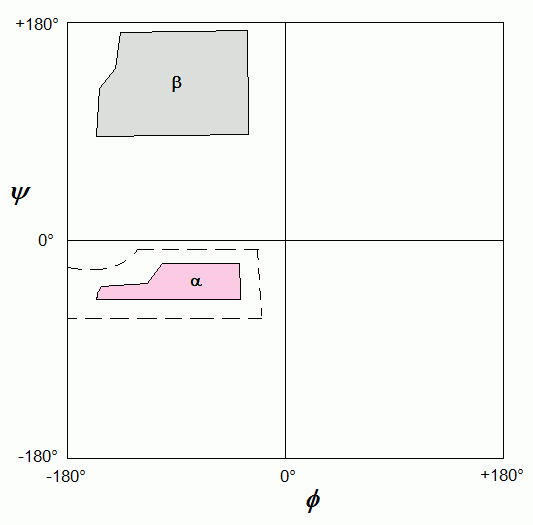 Ramachandran developed a plot for the allowed peptide bond planar angles about the α-carbon. The allowed angles fall within the shaded boxes, with the abscissa showing φ and the ordinate showing ψ.
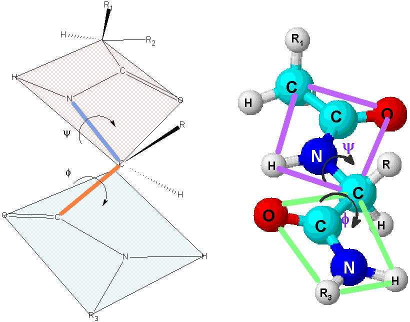 The α-helix is wound so tightly that water cannot get in. With the β-pleated sheet, both a parallel and an anti-parallel activity are seen. In the β-sheet, the side chains of the amino acids tend to line up in one plane; more stable β-sheets form if the side chain groups are sterically small. The protein silk is an example of a βsheet structure of protein. In 1969, the ψ and φ angles were changed so that they are now 180° opposite.
Bonding Character
| Bond | Energy (kcal/mole) |
|---|---|
| H bond | 3-4 |
| hydrophobic | 0.5-3 |
| disulfide | 50.5* |
| ionic (electrostatic) | 3-7 |
| van der Waals | 0.1-0.2 |
* note
that this was originally written as 2kcal/mol but is clearly an error; corrected in lecture 8 Oct 1981 | |
Hydrogen bonding stabilizes structural formation to provide the lowest free energy. Bond strength is ~3-4 kcal/mole.
Van der Waals bonding becomes important in the packing and ordering of molecules. Denatured and native proteins show a tremendous difference in free energy:
native ↔ denatured ΔG = −4 to −15 kcal/mol
Methods of denaturing proteins include the following:
- detergents — SDS is used to disrupt bonds but can be removed to restore the native state
- heat will permanently denature a protein
- urea and guanidinium chloride are thought to act
on water and cause unravelling of the protein by taking away its
water.
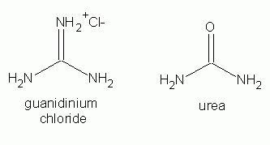
Dynamic Character of Proteins
The molecular state of a protein would seemingly seem static, but evidence shows that the atoms making up a protein are quite dynamic. Experiments with tritium [3H] exchange demonstrate this. In equilibrium, an amine moiety takes on a proton:
—NH3 + H+ ↔ —NH3+
but this does not occur in aqueous solution or on the surface of a protein rapidly. The rate at which 3H-labeled protein equilibrates with water will establish the dynamics. The unlabeled protein is first incubated in tritiated water for days. Then the protein is run on a gel filtration column to remove it from the triated water and exchange it is normal water.
A various times and temperatures, the solution is sampled and the protein removed in order to count isotope exchanged in the water. At 0° the exchange takes many hours and never reaches completion. At 38° the exchange occurs much more rapidly and is practically complete after 10 hours. When urea is added to the 0° protein, it occurs as quickly as the higher temperature protein, indicating that solvent access to the protein.
X-ray crystallography also shows the dynamic state of the amino acid side chains for residues on the surface. Anfinsen demonstrated that the 2° and 3° structure of a protein depends on its 1°. His work on pancreatic RNase is typical. 8 M urea and mercaptoethanol reduce -S-S- bonds and cause protein to assume random coil. Dialysis brought back a great percentage, but not all of the activity. If the -SH groups were oxidized, an inactive non-native structure persisted. These experiments revealed that disulfide bonds do not determine 2° or 3° structure (laws regarding entropy demonstrate that), but they stabilize it. The native state is also not the most stable:
- Stabilizing the interaction of the amino acid side chains determines 2° and 3° structure
- Proteins are dynamic
- Bonds other than covalent are the primary ties that form the protein
6 October 1981
A protein is not a solid house into which the visitor (the ligand) enters by opening doors without changing the structure. Rather it is like a tent into which a cow strays.
Modern (Cf. Historical) Axioms (after 1960) [?]
The current hypothesis about denaturants such as urea and guanidinium HCl is that they are thought to change the character of the solvent.
Some observations about proteins:
- Overall structure is compact, regular and irregular.
- No polar residues usually inside; polar usually outside, ionized groups are always outside.
- The conformation of residues is close to those of isolated units (most residues follow the φ and ψ angle plots).
- Atoms will remain fixed in space but are microscopically dynamic.
- Large proteins fold into domains about 40-150 residues in size and each domain connects to another through a simple polypeptide sequence
- Larger proteins are obtained by aggregation.
Methods for ascertaining 2° and 3° structures based upon a knowledge of the 1° sequence come from known or correlated data of proteins whose 2° and 3° structures are known. Two approaches are used:
- Probabilistic: no proteins with an α-helix deviate from the 3.613. At least 10-12 proteins necessary to distinguish α-helix. The possibilities are averaged and predictions are made according to the average.
- Physicochemical: uses a non-mathematical method.
(Carter and Schimmel in Chap. 5 address these methods).
Methods for Protein Isolation
Various properties pertaining to proteins are used to achieve their separation and purification.
Consider hemoglobin (Hb). This tetramer is composed of α and β (α2β2) subunits. 35% of the mass of the RBC is composed of Hb. Homogeneity is essential to study its physicochemical properties effectively. Proteins possess 6 characteristics that are exploited:
- solubility
- crystallization
- size
- charge
- adsorption
- density
Before a protein can be isolated, a means of detecting it must be forthcoming. For an enzyme, the activity assay is used.
Once a means of detecting it is possible, the isolation can commence. Polyacrylamide gel electrophoresis is used to achieve resolution and separation based on size and charge. Tube discontinous gel electrophoresis is one example. Protein movement in these gels is characterized by the equation:
RM = protein movement / dye front movement

Plots of the migration of protein A against different gel concentration show a logarithmic curve, which when transformed to plot the log of the migration coefficient (RM) against the gel concentration becomse a straight line. The slope of the line is ∝ to the molecular weight. The figure shows that protein A has both a greater charge density and a greater size. Both size and charge are combine to cause separation by electrophoresis, but there are methods that make use of charge alone or size in separation.
Affinity chromatography is a purification method that can almost obtain purity on the first run. A chemical moiety is constructed on the bead (particle) matrix which has either the same binding property either to the active site or inhibitory (regulatory) site of the protein. Starkenstein (1910) was the first to employ affinity (bio-specific) chromatography by the use fo a starch column to separate α-amylase.
Agarose is derived from agar agar and is chemically a water-soluble, and inert copolymer of D-galactose and 3,6-anhydro-D-galactose (see structure).
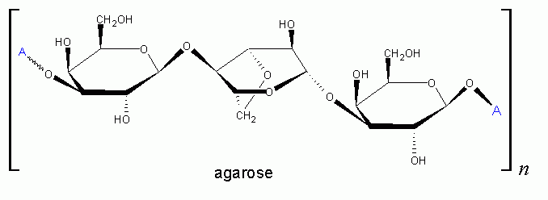
Porath (1967) treated agarose with CNBr at pH 12 at temperature 5-10° in water. This derivatized agarose to be chemically reactive with protein. The reactive product was washed with water and then protein added to it. The reactive group is an amidocarbonate which occurs in both cyclic and acyclic forms (the cyclic form is show as the blue-colored structure in the figure).
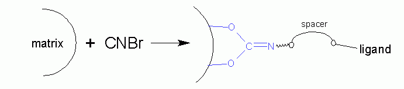
A spacer arm is usually added, and it must contain a reactive group that attaches the ligand. Most spacers are alkyldiamines which react at high pH to make the amine reactive (see figure below).
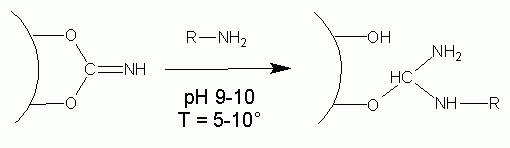
At the other end of the R group, another amine group is present to which the ligand will be attached. The ligand will need an available -COOH group in order to form an amide with the amine of the spacer. Formation of an amide usually is done through the use of very reactive derivatives of urea, known as carbodiimides. Water can be removed from urea (heating?) to form carbodiimide itself, but this is too reactive and bond rearrangement instead produces cyanamide (see reaction scheme below).
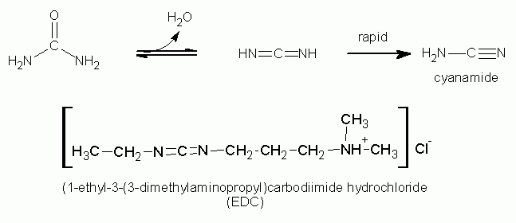
Active carbodiimides that can be produced more stably reduce the electronegativity of the diimide nitrogens. EDC is an ionic carbodiimide that is soluble in water and reactive; it is ionic in order to keep it from adsorbing to the matrix. Note that other than agarose, glass and polyacrylamide are used as matrices for ligand binding.
8 Oct 1981
In the previous lecture the following scheme was shown for the activation of and coupling of spacers and ligands to an affinity chromatography matrix. 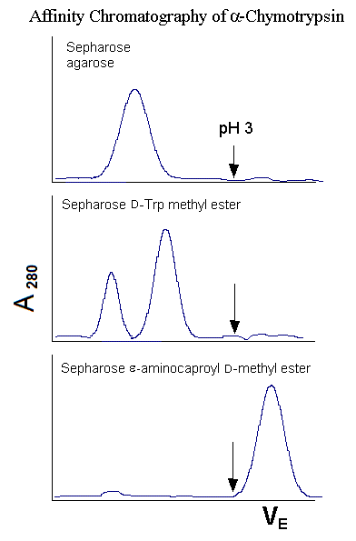
An example of how affinity works is shown by α-chymotrypsin. On unmodified matrix (Sepharose or agarose), the enzyme elutes from the column by gel filtration, i.e. according to its molecular size on a sizing column. A pH 3 elution buffer is added at the end to see if anything comes off, and nothing does.
When a ligand D-Trp methyl ester is attached, the enzyme is slowed down because it has some affinity for the ligand, but it does not bind to it. Addition of pH 3 buffer shows that nothing bound to the column.
When the ligand instead is ε-aminocaproyl D-methyl ester, which is normally just a spacer arm, the chymotrypsin does not elute until a pH 3 buffer is added. This behavior is typical of serine proteases. The equation for expressing affinity is expressed as:
E + S ↔ ES KS = 10−3-10−6 M
The question here is the nature of the affinity. It is a non-specific binding or is it a bio-specific affinity. Use of a competitive ligand in the elution buffer might remove the protein without using methods to deform or denature the protein (change in pH, use of denaturants or chaotropes).
 The discovery (by Shaltiel) of the affinity by these proteins
for the spacer arm alone has led to a new kind of
affinity chromatography called hydrophobic interaction chromatography.
Shaltiel was trying to isolate glycogen phosphorylase from glyceraldehyde
3-phosphate dehydrogenase. He found that many proteins were sticking
alone to the hydrocarbon chains and decided to experiment with these alone.
Using a column with a C1 spacer arm, only one peak eluted;
adding a protein-deforming agent produced no protein
A280-absorbing) peak at all. With a C3 spacer
arm there was a slight but imperfect separation
of the two enzymes, with glycogen phosphorylase slightly retarded on
the column. Using a C4, G-3PD eluted as always without showing
any affinity, but glycogen phosphorylase required the addition of the
deforming agent to elute it. And with the C6 spacer arm,
not even the deforming agent was sufficiently strong to elute the
phosphorylase. Acetic acid was necessary to elute it, denaturing and
inactivating it in order to elute it.
The discovery (by Shaltiel) of the affinity by these proteins
for the spacer arm alone has led to a new kind of
affinity chromatography called hydrophobic interaction chromatography.
Shaltiel was trying to isolate glycogen phosphorylase from glyceraldehyde
3-phosphate dehydrogenase. He found that many proteins were sticking
alone to the hydrocarbon chains and decided to experiment with these alone.
Using a column with a C1 spacer arm, only one peak eluted;
adding a protein-deforming agent produced no protein
A280-absorbing) peak at all. With a C3 spacer
arm there was a slight but imperfect separation
of the two enzymes, with glycogen phosphorylase slightly retarded on
the column. Using a C4, G-3PD eluted as always without showing
any affinity, but glycogen phosphorylase required the addition of the
deforming agent to elute it. And with the C6 spacer arm,
not even the deforming agent was sufficiently strong to elute the
phosphorylase. Acetic acid was necessary to elute it, denaturing and
inactivating it in order to elute it.
Affinity chromatography has progressed to the point where the ligands can be active enzymes and even living cells. β-Galactosidase has been attached to column, and lactose load elutes as glucose and galactose, the two monosaccharides that compose the disaccharide.
Purity and Its Criteria
The purification process usually is said to be complete when homogeneity (purity) is established by using methods to disprove that heterogeneity exists (that is, a substance behaves as single substance).
Physical methods can be used to establish purity. These include work on a molecule's (net) charge or size (relative or apparent mass).
Ultracentrifugation can examine sedimentation velocity or equilibrium. An ultracentrifuge cell with a window can be examined along its length for changes in refractive index, which are an indication of solution density. A plot of the change in refractive index (Δη) against the length of the cell will show a single peak if the protein is pure, multiple peaks otherwise.
For sedimentation equilibrium the forces of sedimentation overcome the forces of diffusion to draw the material into bordered static equilibrium. The concentration is monitored using A280 reading and graphed against r2, where r is the radius of the ultracentrifuge cell. A plot of ln c (c is the concentration effectively related to the absorbance if the extinction is known) versus r2 should be linear if the protein is pure.
Gel filtration is not a suitable test of purity. The ability to resolve proteins to check for contaminants is poor, although the sensitivity is better than ultracentrifugation. Conversely sedimentation equilibrium gives excellent resolution but poor sensitivity.
13 Oct 1981
In the last lecture the discussion of affinity chromatography ended with the highlight that elution of the bound ligand can be achieved by adding competing ligand or by changes in ionic strength or pH. Physical, chemical and biological tests can be used to evaluate purity.
Biological (Functional) Tests. Specific activity is a measure of the biological activity of a protein per unit mass of the protein. With each purification step, specific activity increases, often one or two orders of magnitude with a single purification step (and especially with an affinity step). Once homogeneity is attained, specific activity will remain constant in future purification steps. Indeed, within a purification, if the elution is fractionated, both the activity of the enzyme and the total protein of each (or selected) fractions should be measured to assess the specific activity within the purification. The plot of specific activity against fraction can reveal a great deal about selecting fractions for further analysis, or for pooling.
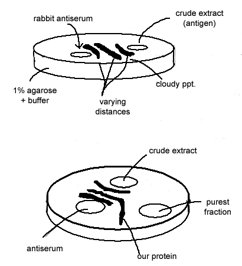 Some proteins are evaluated using antibodies. Antibodies have small segments which can attach to other proteins and render them inactive if they have a destructive activity (IgGs in particular are so and the most adaptable). Most proteins have three or four immunogenic determinants and thus 3-4 IgGs exist to bind the protein.
Suppose a crude extract is injected into a rabbit in order to produce antibodies against all proteins present. The antiserum is then collected and the extract added to one well of an immunodiffusion plate and the antiserum to another well. Antibody-antigen precipitation occurs at a certain concentration of antigen to antibody. With an immunodiffusion plate, antigen and antibody diffuse towards each other. Three bands of precipitates identify at least three proteins present in the crude extract to which antibodies against these are present in the antiserum. Since antibodies are all the same size (about 150 kDa) and thus diffuse at the same rate, the fact that one band is formed closer to the antigen well and than another band indicates that the antigen (protein) diffuses at a slower rate, and thus is larger in size. Diffusion of proteins in the plate is through an inert matrix, and so molecular size can be the only reason that a molecule moves more slowly than another. The fact that 3 bands were present shows that at least 3 antigens were present in the crude extract, and thus the extract is impure (as would be expected).
Once a purification step is (or several are) are performed, and it is expected that purity is obtained, the pure material is added to a 3rd well and precipitin arcs analyzed. The crude extract serves as a control, and should produce the same number of bands as before. One of the bands should form an arc however, which forms a band with the pure fraction. That identifies the protein and suggests but does not prove purity.
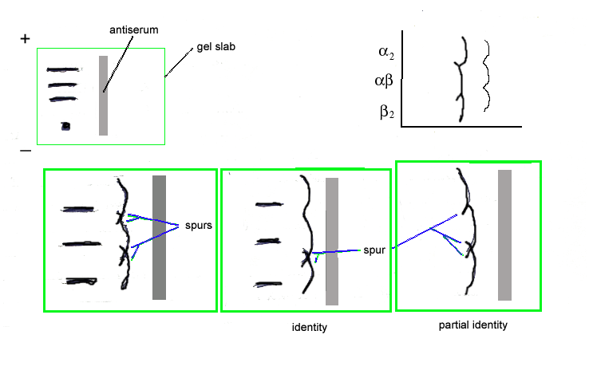 Another technique making use of antibodies involves separating proteins electrophoretically. After electrophoresis, a trough is then cut along the side of the electrphoresis path, along the length of the gel. A dilute solution of the antiserum used in immunodiffusion is then added to the trough, and time is allowed for diffusion to occur and for visible precipitin arcs to form, as for immunodiffusion. The precipitin arcs form in a fashion shown in the figure, with radii indicating that the center of the arc comes from the antigen side.
Arcs that do not have spurs in them indicate that the antigens are recognized by the same antibody. In some cases there is one spur off an arc while another intersecting/overlapping has no spur: this indicates that the arc from the protein with the spur shows partial identity somehow, a shared determinant. A good example of how this occurs is with multimeric (multisubunit) proteins. If a protein has different isoforms with homo- and heteromeric subunits, then such patterns are seen. The figure shows the kind of precipitin arcs that form when a protein can assume an α2, β2, and αβ dimeric forms.
Chemical Testing. No one test in itself can determine purity. Proteins have an N- and C-terminal end. A test for this must be stoichiometric to indicate purity. Assays for non-protein moieties can be used to compare to proteins: for example, four Fe2+ can be counted in an assay per hemoglobin molecule. Or one might see one pyridoxal phosphate for one aminotransferase. Thus a test for a non-protein moiety can reveal impurity to an extent.
Generally polypeptides do not get much larger than 40-50 kDa in forming
proteins. Proteins seen to have a large relative size might be
assumed to be composed of subunits. Svedberg in the 1930s invented
the ultracentrifuge and used it to report on subunit characteristics
of large proteins (he used the term subunit
to indicate
the smallest unit of undefined structure). The term monomer
might be reserved for structures which are held together by non-covalent
bonds and which can associate and dissociate without severely affecting
structure.
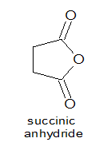 A purification technique involving purification of a monomer or part of a polymer: a change in pH or ionic strength causes dissocation, or addition of iodoacetic acid to modify reduced sulfhydryl groups. The attached -CH2-CO− moiety imparts a negative charge to repel strands. A polycation (protein-NH3+)n can be separated using succinic anhydride.
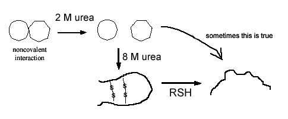 Addition of urea and/or guanidinium chloride will denature the strands and monomers and will have a different effect.
A bifunctional reagent will yield data on subunits and the topology of subunits. A di-iodoacetamide derivative, ICH2C(=O)NHCH2CH2NHC(=O)CH2I, can link two sulfhydryls and has a length of 12 Å. Given a tetramer of α2β2, if the α subunit has a intersubunit disulfide association with the β subunit, then reduction and alkylation with the bifunctional agent will produce a covalently linked α-β dimer. After denaturation only an α-β linked product is obtained. If an α2 is formed, then the disulfide is α-α.
But even after such bifunctional probes are used, this subunit characterization may remain elusive. More might be revealed by hybridization.